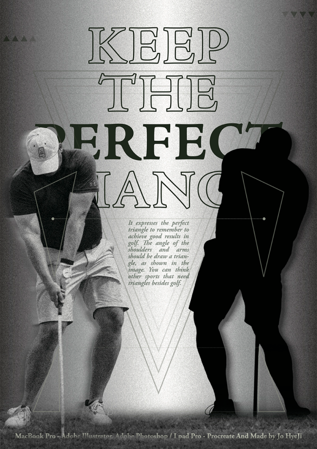
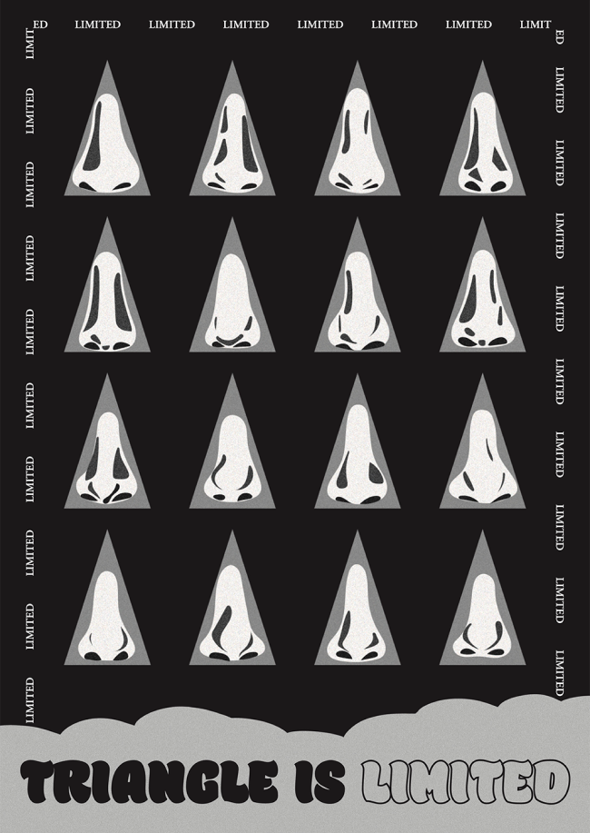
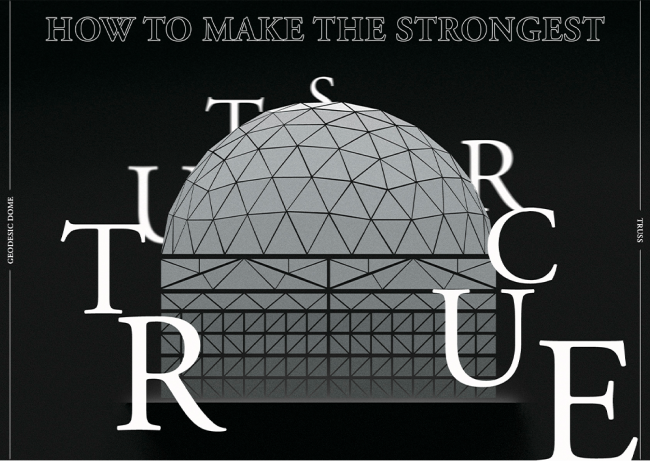
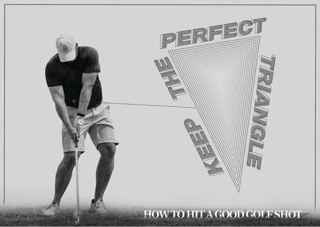
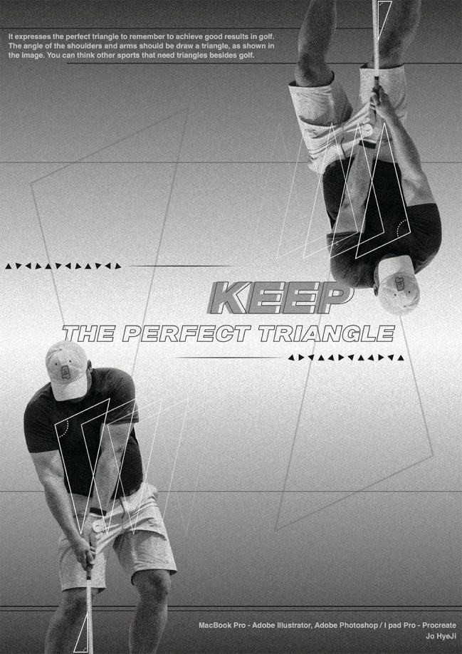
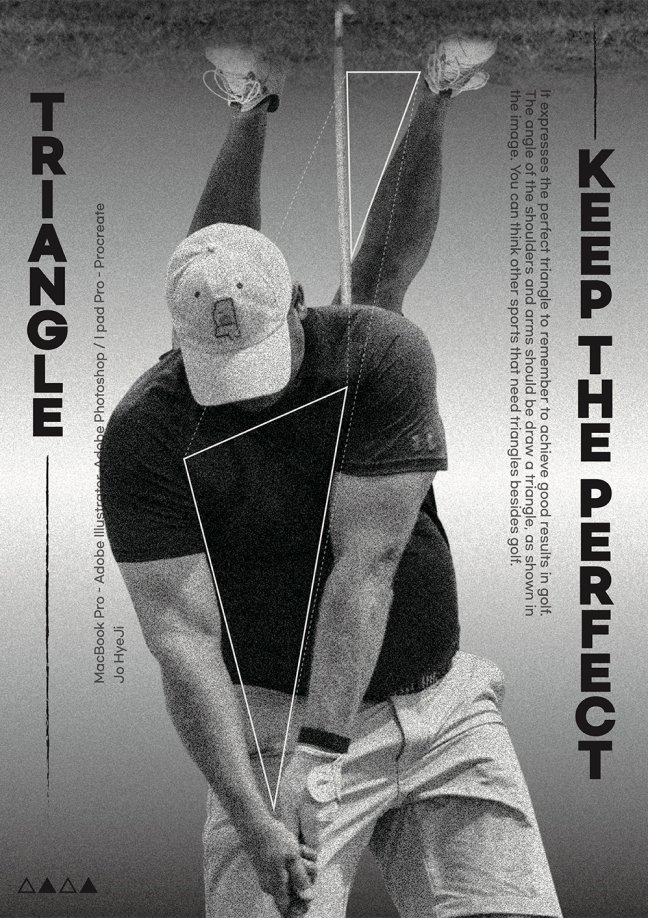
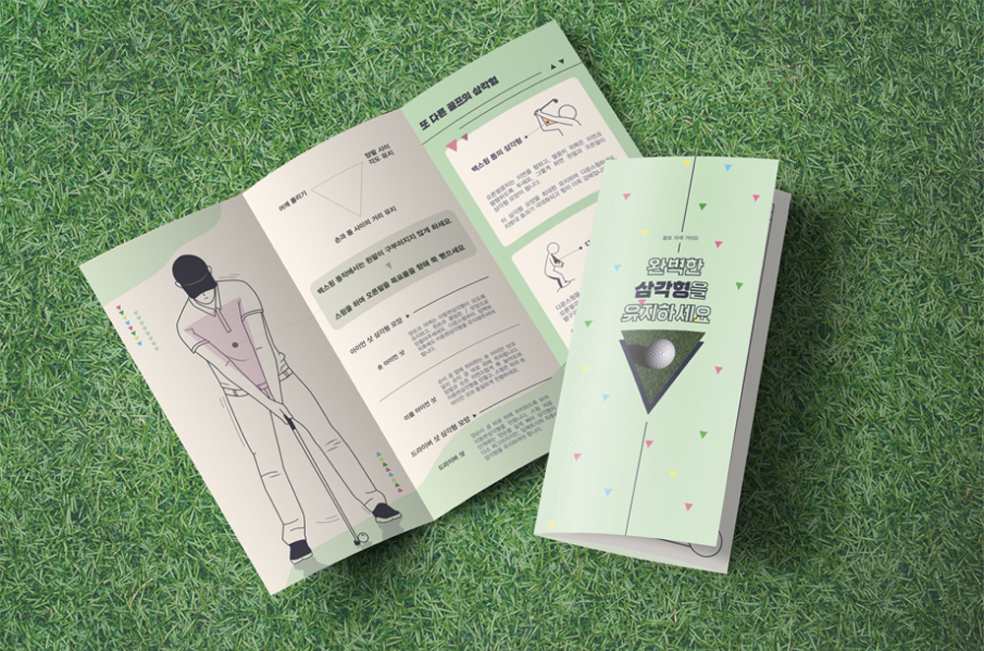
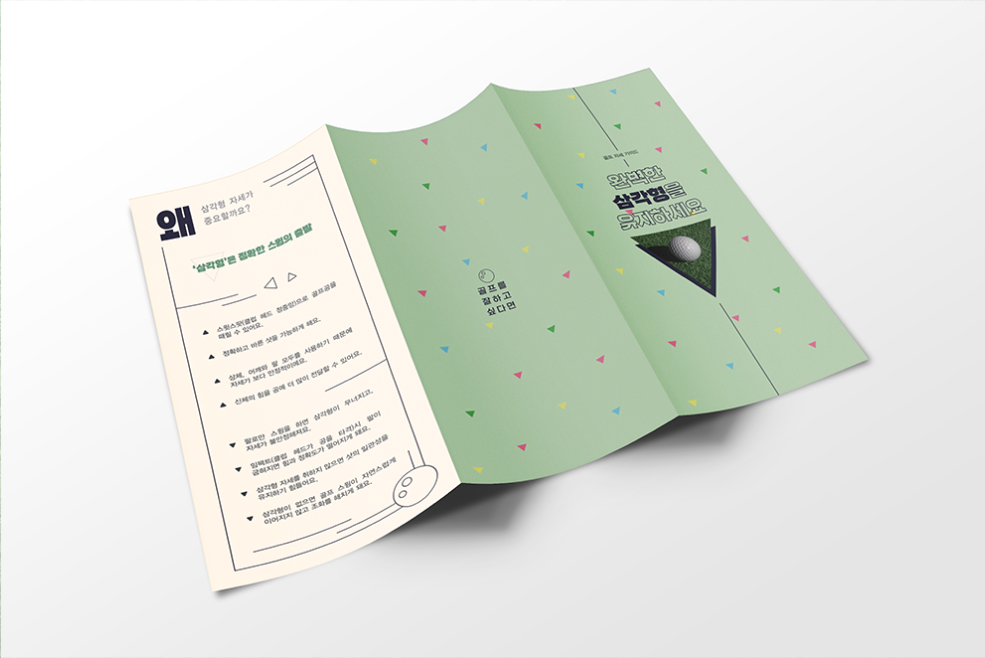

Project
Contact
@eyxyzo
Designer
Shape Research
조혜지
HAVING TRYANGLE
Category
Shape Poster1 / Shape Poster2 / Shape Poster3
신체나 구조물에서 삼각형을 찾고, 그 중 하나를 골라 최종 작업물로 발전시켰다.
SHAPE POSTER1
SHAPE POSTER2
SHAPE POSTER3
Poster
Poster
Leaflet
골프 자세, 사람의 코, 건축물 구조에서 각각 삼각형의 모습을 찾아 흑백 포스터로 나타내었다.
첫번째 포스터 작업 중 ‘골프 자세 속 삼각형’을 골라 발전된 포스터를 제작하였다.
삼각형과 골프 자세와의 연관성에 대한 정보를 전달하기 위한 리플렛을 제작하였다.







